今天想复盘一下，大模型注意力机制的变化历史，以及目前各家开源模型的选择。大模型每写一个字，都要回头把已读的全部内容重扫一遍。上下文越长，这笔账越算不起。从2024年开始，各家公司在“该省在哪儿”这个问题上，分别给出了不同的解法。 本文希望尽量通俗的帮大家科普，如果有形容不当之处，欢迎指正。
大模型是一个字一个字往外输出的。每输出一个字之前，它要回头看一遍已经写过的全部内容，这个“回头看”的动作，就叫注意力（attention）。具体怎么看？模型给每个已经处理过的字，算出两个向量：K（key，键）：这个字挂出的标签（“我是个人名”“我是个否定词”）；V（value，值）：这个字真正携带的内容。而正在生成的那个新字，也会算出一个向量：Q（query，查询）：我想找什么样的字。然后拿Q去和前面每一个K做点积，谁的标签跟需求越匹配，算出来的分数越高，就从谁那里多取一点V。
举个具体的：句子是“小明打开冰箱，发现它空了”。处理到“它”的时候，它的Q大致在表达“我在指代前面某个东西”；而“冰箱”的K大致在表达“我是个可被指代的物体”。两者点积很大，于是“它”大量取走了“冰箱”的V。模型就知道，这里的“它”说的是冰箱。
一个模型有很多层（GPT-2 small有12层，K3有93层），每层都要完整做一遍。而且每层还同时开几十路并行地查（这叫多头），每路关注不同类型的关系：有的盯语法，有的盯指代，有的盯主题。
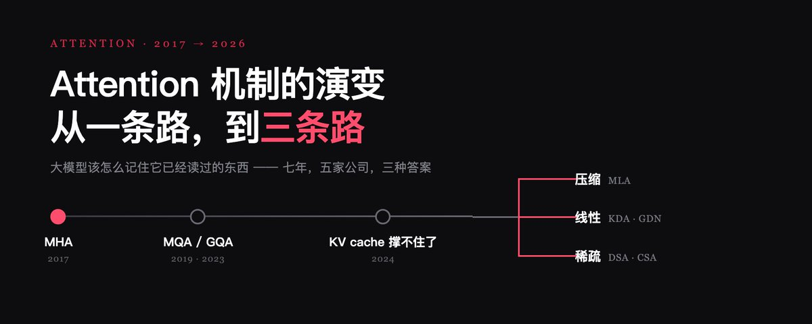
这里有个巨大的浪费。模型每写完一个字，把它接到后面，再写下一个字时，前面所有字的K和V要从头重算一遍。而这些值其实一点没变。解决办法很直接：把算过的K和V存起来，别重算了。这就是KV cache（键值缓存），大模型推理里最重要的一个优化。它避免了反复计算前缀，大幅加速了自回归生成，是今天所有大模型服务的基石。
但缓存自己成了瓶颈。它会一直变大。上下文每多一个字，缓存就多一份。而且是每一层、每一个头都要存一份。更要命的是它带来的瓶颈类型。生成每一个字，GPU都要把整份缓存从显存读进计算核心过一遍（旧缓存只读不改，只在末尾追加新一个字的K/V）。上下文越长，这份搬运越久：最后模型不是算不动，是搬不动。这句话是理解后面一切的钥匙。接下来这些年所有的架构创新，本质上都在跟这份不断膨胀的缓存较劲。
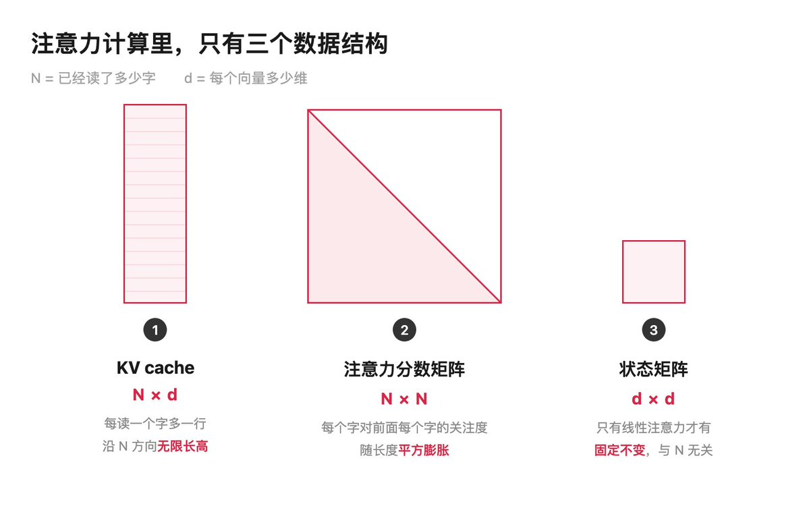
最早的思路很朴素：既然每个头都要存一份K/V，那能不能让它们共用？MQA（Multi-Query Attention，2019）：所有头共享同一份K/V。缓存瞬间小几十倍，但质量掉得也明显。GQA（Grouped-Query Attention，2023）：折中方案。把头分成若干组，组内共享一份K/V。今天大量开源模型的默认配置。
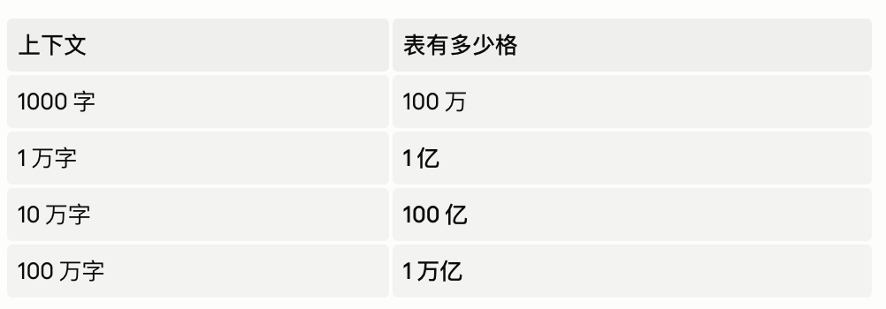
要看懂三条路线的区别，先把注意力计算里的三个数据结构摆出来。只有三个，都不难。
①KV cache ： 一张N × d的表。模型每处理一个字，就为它算出K和V向量，存进缓存。N = 已经读了多少字，d = 每个向量多少维。所以缓存是N行 × d列。读一个字，多一行。它沿着N的方向无限长高。
②注意力分数矩阵 ： 一张N × N的方阵。新来的字要拿自己的Q去和前面每一个K比对。把所有字的比对结果排成一张表：第i行第j列 = “第i个字对第j个字的关注度”。因为写字时不能偷看后文，实际只用下三角。这张表随长度平方膨胀：严格说，这张完整方阵主要出现在训练和prefill阶段，逐字解码时并不会真的物化出来；但整段序列算下来，总工作量仍随长度平方增长。
③状态矩阵 ： d × d，固定不变。这个只有线性注意力才有。马上讲。（简化来看它是一个d × d的方块；实际实现里通常每个头一份，另外还带归一化和门控等附加状态。）
三种解法的差别，可以对齐成一张表。
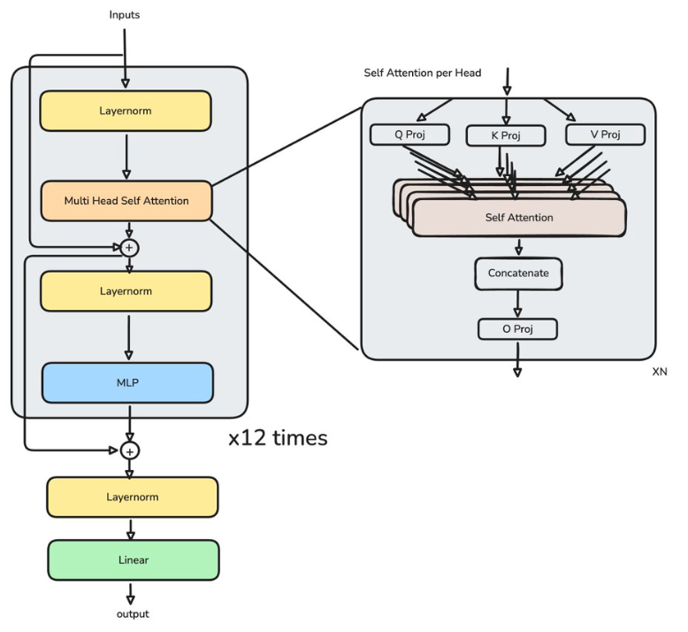
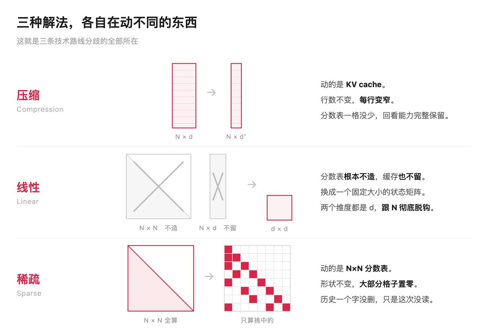
动的是KV cache那张N × d的表。行数（N）不动：每个字还是占一行。但每行变窄：把向量投影到更低的维度存起来，用的时候再投影回来。具体数字最直观：GLM-5每个token每层的KV cache只存576维；而论文里拿来对照的GQA-8方案要存2048维，每行窄了3.5倍。
关键在于：那张N × N的分数表一格没少。每个字仍然参与计算，仍然能被精确回看。压缩只发生在“怎么存”，不发生在“看不看”。 性质：省的是常数倍。不管多长，都是压到1/3.5。增长阶没变，还是随N线性长高。代价：投影有损，压缩比越高丢得越多。而且不是免费午餐：智谱一开始试纯MLA时打不过原来的GQA-8，是靠额外的训练技巧才把差距拉回来的。
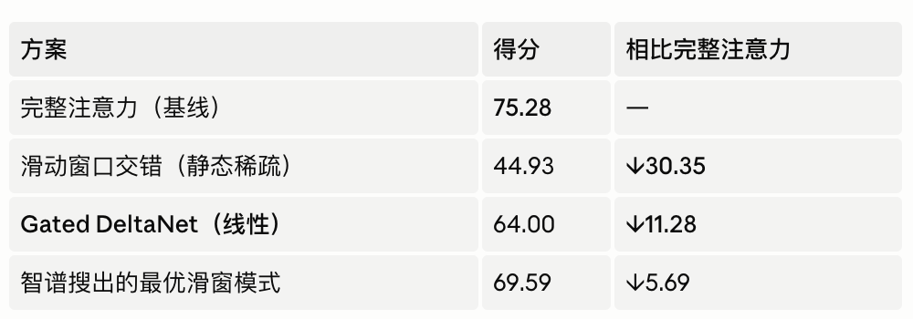
最激进的一条：那张N × N的分数表根本不造，那张N × d的缓存也不留。换成一个d × d的状态矩阵。注意这个形状：两个维度都是d，跟N一点关系都没有。做法是把每个字的K和V累加进这个方块里。读的时候拿Q去乘一下，就把相关内容取回来了。这就是“读书笔记卡片”：读一页更新一次卡片，然后把那页扔掉。卡片永远是d × d那么大，你读500页还是50万页，都一样。
“线性”这个名字说的是开销的增长方式：原来长度翻倍开销翻四倍（因为是N×N），现在长度翻倍开销就翻倍：线性增长。性质：唯一一种让缓存与长度彻底脱钩的方案。这是它的杀手锏。代价：d × d的容量是有限的，而要往里塞的东西是无限的。写到一定程度，不同的关联开始互相干扰：想查的那条，摸出来会混着别的残影。这是线性路线始终要对付的死穴。
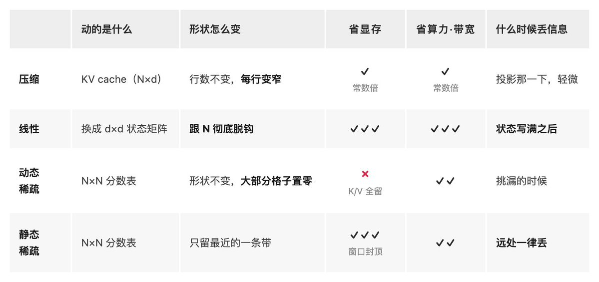
动的是那张N × N的分数表。表的形状一点没变，KV cache也一行不少全留着。变的是：每一行只挑最相关的k个格子认真算，其余直接当成零。GLM-5的k = 2048，上下文上限约20万token。也就是说一行有20万个格子，只算2048个，填充率约1%。 性质：历史一个字没删。这次没挑中第37个字，它仍然躺在缓存里，下次需要时照样能被挑到。代价：这一次可能挑漏。
稀疏还要再分两种，而且这两种连省不省显存都不一样：静态稀疏：挑哪些格子是固定规则。 最常见的是滑动窗口：永远只算最近128格。因为更早的可以直接扔掉，显存反而是有上限的；代价是远处信息一律丢失。动态稀疏：挑哪些格子看内容临时决定。 每次实际打一遍分，这次挑第12、37、200个，下次可能完全不同。正因为下一步谁都可能被选中，所有K/V都得留着，显存一分不省。
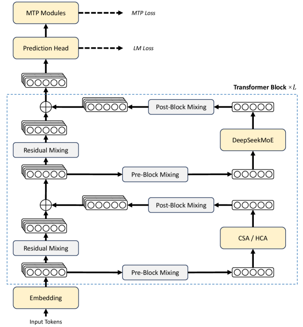
MLA ： Multi-head Latent Attention（多头潜在注意力）。 DeepSeek发明的，压缩流派的代表。一句话：KV cache不按原样存，先压成一个低维的“潜向量”再存，用的时候再解压。但注意力本身仍然是完整的，每个字都参与计算，能精确回看任意一个词。
DSA ： DeepSeek Sparse Attention（DeepSeek稀疏注意力）。 DeepSeek提出，动态稀疏的代表作。智谱也使用了这个方案。两步：一个叫lightning indexer（闪电索引器）的极轻量小网络，给每个历史token快速打个分；挑分数最高的top-k个，只对这k个算真正的注意力。关键在于打分是看内容的，不是按位置固定的。这就是它比滑动窗口强的根本原因。有一点需要说清楚，免得把它想得太完美。主注意力确实降到了跟k成正比，但那个索引器本身仍然要扫一遍全部历史，论文里写的还是平方级：只是它足够便宜。还有一个特别值得注意的工程事实：稀疏化可以“后装”。智谱不是从头训一个稀疏模型，而是在已经训好的稠密注意力模型上续训（注意这里说的是注意力稠密，GLM-5本身是MoE），花的算力远小于DeepSeek当初打通这条路的投入。这意味着一家公司可以在现有模型上低成本改造，不必推倒重来。
KDA ： Kimi Delta Attention（Kimi增量注意力）。 Moonshot提出，线性流派的代表作。Qwen在用的Gated DeltaNet是它的前身。一句话：不存KV cache，把读过的内容全部折进一个固定大小的状态矩阵，读一个字更新一次，然后把原文扔掉。关键在于状态矩阵的尺寸只跟d有关，跟读了多少字完全无关。
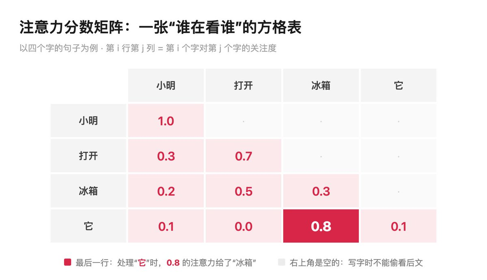
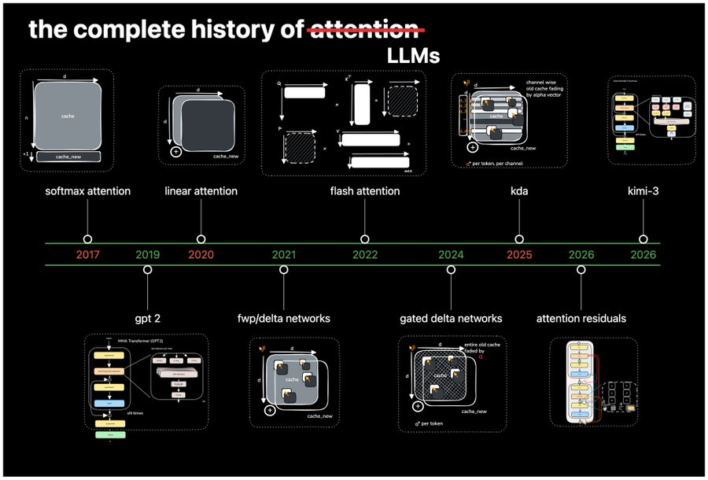
Kimi K3：KDA打底，MLA兜底。 K3一共93层，其中69层用KDA，24层用Gated MLA。排布上大致是“3层KDA + 1层MLA”循环23轮，然后在最末尾额外挂一层MLA：所以是93而不是92。这个细节有讲究：它保证模型的最后一层一定能全局回看。KDA层是那块固定大小的记忆板。省显存、跑得快，但注定丢细节；MLA层保留了“每个字都能被精确回看”的全局注意力能力，只是把每行缓存压窄了存。KDA管“记住大意”，MLA管“翻回原文”。K3还有一个叫AttnRes的新机制，把注意力从“横着看前文”搬到“竖着看前面的层”，让靠后的层能主动去取前面那些还没被稀释的干净表示。不过它是按块工作的：取的是块级聚合，而不是单独某一层。同路人：阿里的Qwen3-Next用Gated DeltaNet + 完整注意力，官方说明的比例正好是3:1。两家用的线性机制不完全一样，混合比例一致。
DeepSeek V4-Pro：换掉了MLA的一半。 V4在KV这一侧不再用MLA了。官方配置里MLA那几个定义性字段（kv_lora_rank、v_head_dim之类）全都不存在，128个注意力头共用同一份KV，论文里管这套叫 “Shared Key-Value MQA”。但也不能说它把MLA整个扔了：query一侧的低秩压缩原封不动留着。而且那份共用的KV本身就是把几千维的隐状态压窄的结果：只是不再像MLA那样还原回每个头各自的K和V。在这之上，V4又沿着另一个方向压了一道。这两个方向是正交的：一个压的是“每个字存多宽”，另一个压的是“多少个字合并成一条”。后者具体是两种注意力逐层交错：CSA（Compressed Sparse Attention，压缩稀疏注意力）每4个token的KV压成1个，再用indexer在压缩块里挑top-1024；HCA（Heavily Compressed Attention，重压缩注意力）每128个token压成1个（极限压缩），然后不挑了，全看：因为已经够小了，100万token压完只剩8192个。两者都额外挂了一条128宽的滑动窗口分支，用来补住局部细节。V4干的是“先做缩略图，再在缩略图上挑重点”。CSA是中分辨率缩略图挑着看，HCA是极低分辨率缩略图全看。61层里，前2层用HCA，之后两种交错，大致各占一半。收益（100万上下文下）：V4-Pro只需上一代的27% 算力、10% 的缓存。注意这是算力和缓存的账，官方并没有给出端到端的推理提速倍数。
GLM-5：做了完整实验，然后公开否决了线性。 GLM-5的选择是MLA + 全层DSA：压缩 + 动态稀疏。智谱还公开了“为什么不选另一条”的实验数据。他们在一个90亿参数的模型上续训了1900亿token，把几种方案正面对撞，其中就包括Gated DeltaNet：也就是Qwen在用、Kimi的KDA由此改进而来的那个。RULER@128K的成绩（分数越高越好）：另一项RepoQA@128K（在长代码里找目标函数）：完整注意力65.83，Gated DeltaNet掉到56.17。智谱的结论：这些高效注意力方案在精确检索类任务上都有难以避免的损失，即便保留一半的层做完整注意力也补不回来。但这张表最耐人寻味的地方，其实在那两栏滑动窗口上：随便交错的那个只有44.93，全场垫底；而智谱自己搜出来的那套层配置是69.59，反过来是所有高效方案里最好的一个，比线性的64.00还高。同一种机制，垫底和第一都是它。所以怎么配，可能比用哪种机制更要紧。还有一点值得说：线性派自己也承认这个短板。Kimi Linear的论文里就写着，长上下文检索仍是纯线性注意力的主要瓶颈。分歧从来不在“线性有没有短板”，而在“这个短板要用多少完整注意力层去补”。
MiniMax：走过两条路，中间还退回过原点。 M1（2025）：混合Lightning Attention，线性层和完整注意力大约7:1：比Kimi、Qwen的3:1激进得多；M2（2025年10月）：退回完整注意力，还专门发文解释为什么；M3（2026年6月）：转向block稀疏。M3的做法跟DSA同类，但粒度更粗：先算每个token的分数，再按128个一组压成“块分数”，然后整块整块地挑，每次选16块，合计2048的预算。为什么要整块挑？因为GPU读显存喜欢连续大块。挑2048个散落各处的token，和挑16个连续的大块，算力一样，但后者搬运效率高得多。省计算量，从来不等于跑得快。论文里报告的加速是预填充14.2倍、解码7.6倍（这组数字的对照基线是同规模的密集GQA实验模型，不是M2本身，引用时别串口径）。而M2那篇退回说明，才是整件事里最该被记住的部分。因为他们点出的头号问题，根本不是架构：而是评测本身的局限。指标一旦成为目标就不再是好指标，benchmark永远是现实的漏抽象，判断一个架构好不好所需的认知成本高到离谱，而且所有变量还纠缠在一起动。
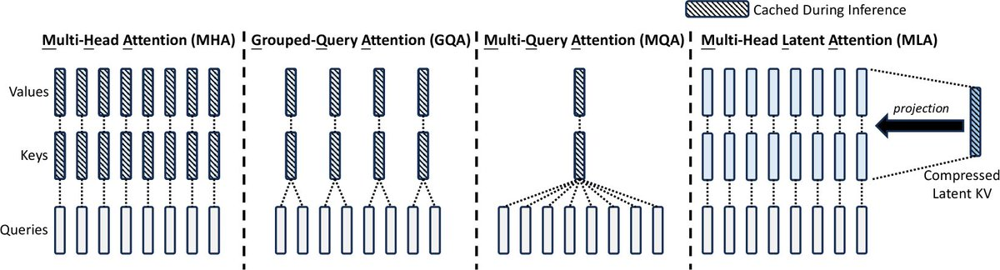
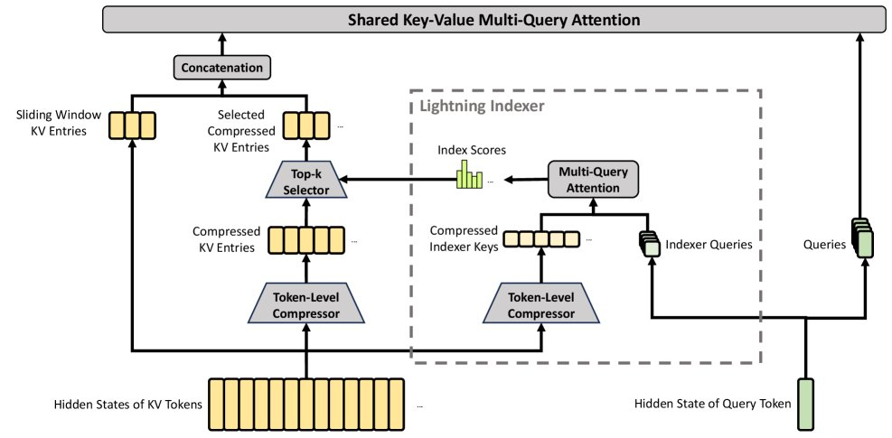
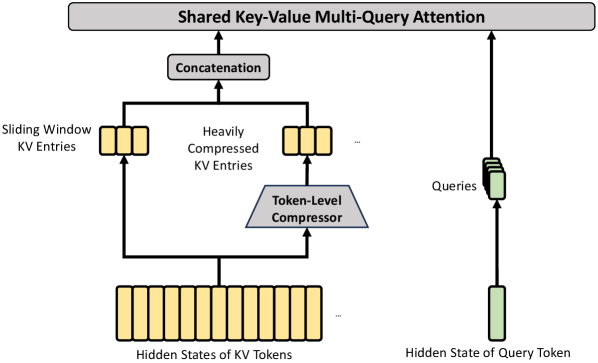
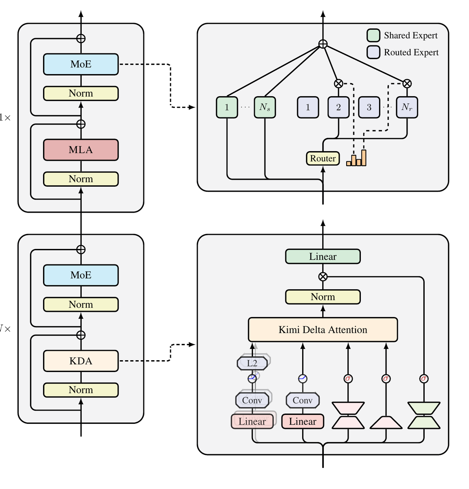
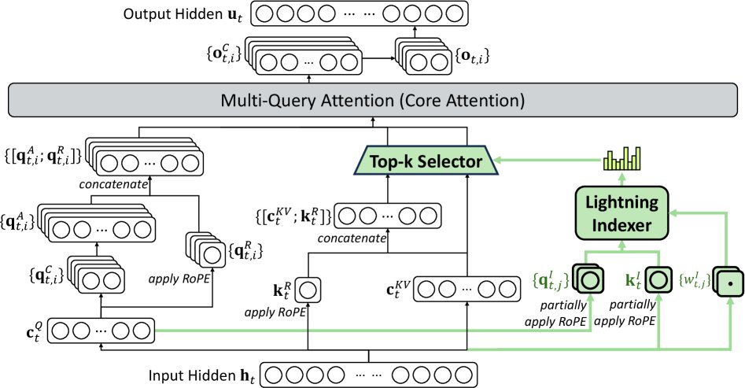
参考：https://x.com/AI_Whisper_X/status/2082842006951490044